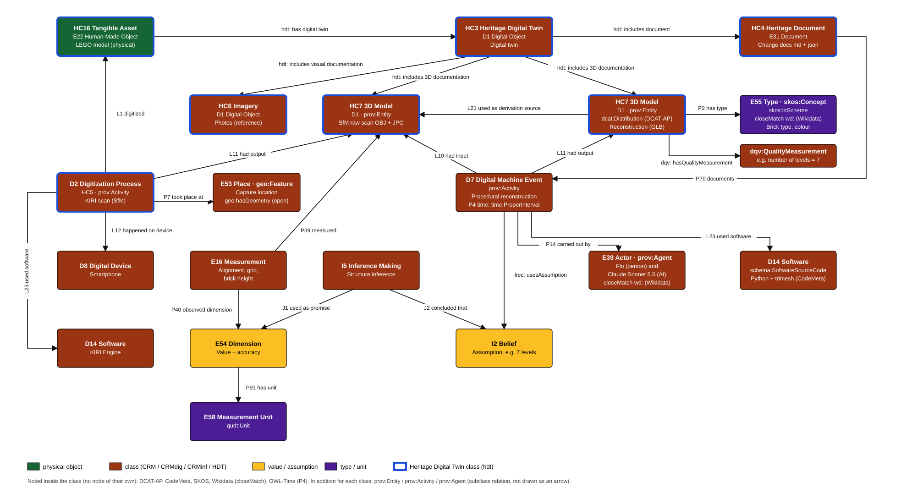
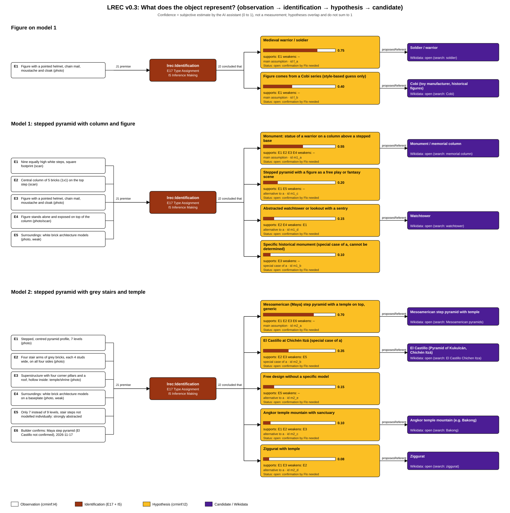
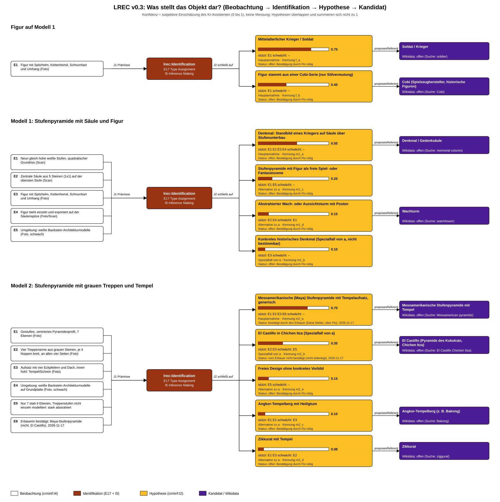

Figures

F1Whole model: scan, reconstruction, interpretation (the FDOx layer is not drawn yet, see PRIMER S2)
Generated by py/figures from ontology/lrec.ttl. SVG

F1 (de)Whole model: scan, reconstruction, interpretation (the FDOx layer is not drawn yet, see PRIMER S2)
Generated by py/figures from ontology/lrec.ttl. SVG



F3Identification: evidence, hypotheses, candidates
Generated by py/figures from ontology/lrec.ttl. SVG


F3 (de)Identification: evidence, hypotheses, candidates
Generated by py/figures from ontology/lrec.ttl. SVG